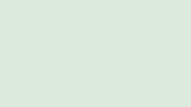

Overall throughput improved 12% quarter over quarter, with regional variance detailed below. This paragraph is intentionally low-contrast to exercise computed color-contrast detection.

| Region | Throughput | SLA | Status |
| North | 1,240 | 98.2% | ● |
| South | 980 | 91.0% | ● |
| West | 1,510 | 99.1% | ● |
Status shown by color only (green = healthy, red = at risk).